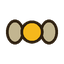
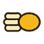
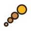

Layers and Timeline
Layers and Timeline
The Timeline window combines layers, frames, animations and playback. The maximum is 120 frames per document.
The Timeline window
- The toolbar (items 1-7 in the diagram): Play / Stop, Loop, the FPS list, the frame navigation buttons with a "frame / total" counter, Duplicate frame, Delete, Inbetween modes and Onion skin.
- The Animation row (item 8): the Animation list and the Settings button. The list shows All frames or one animation; choosing an animation limits the Timeline, the playback and the frame numbers to its frames.
- The table: the top row has the + Layer button, the frame number headers and the + Frame button; below it come the layers (the topmost layer first) with the frame cells.
Layers
- + Layer (the top left corner of the table) adds a layer. A new layer joins the current animation. Drag a layer row by its name to change the order.
- The Show / hide layer (, the eye) and Lock layer (, the padlock) icons sit at the left of every layer: hidden and locked layers are not drawn on by tools and are not changed by filters.
- A double click on a layer name opens its parameters:
- Name, Opacity and Blend mode: Normal, Multiply, Screen, Add. They affect the canvas and the export.
- Generation chance - the probability that the layer is used by the generator.
- Layer group - create/assign a group (Create layer group), rename it, Group visible, Group locked, Remove layer group (the layers stay). Groups are flat.
- Alpha mask layer - a mask from the alpha channel of another layer in the same frame, with Invert mask. Hide the source layer if it is needed only as a mask. Masks are not evaluated recursively.
- Create animation - creates an animation from the selected frames (see below).
- Groups and masks survive layer reordering, Undo and saving to
.sf; old files open as before. - Delete removes the selected layer or frames: after you click a layer name Delete removes the layer, after you select frames it removes the frames.
Frames
- The numbers in the header row are the frame numbers inside the current animation; a frame's header is tinted with the color of its animation. A dot in the corner of a header marks a frame that has frame lighting turned on.
- Duplicate frame (Ctrl+Insert) duplicates the current frame; the + Frame button at the end of the row adds a frame: its tooltip reads "Duplicate frame" or, for an empty animation, "Append a blank frame to this animation". Insert adds a frame from the keyboard.
- Delete selected frames (Backspace or Delete).
- Selecting frames: Ctrl+click - several, Shift+click - a range, Ctrl+A - all frames of the animation.
- A right-click on a frame header opens a menu: Copy frames (Ctrl+C), Paste frames after current (Ctrl+V) and Create animation (Ctrl+Shift+T). The limit is 120 frames.
- Drag a frame header to reorder the frames inside the animation: a blue line shows where it will land and the tooltip reads "Release to reorder frames in this animation". The boundaries of the animations stay intact.
- The duration of each frame: Settings → Frame duration (ms, 0 = FPS). A value of 0 uses the common FPS.
- Hold Shift and turn the mouse wheel over the Timeline to step through the frames.
Animations
An animation is a named range of frames with its own loop setting and a set of layers. A document can hold several animations (idle, walk, attack, jump, hurt, death, cast or your own names); the Timeline shows one animation at a time or All frames. Animations are exported as clips (see Export).
- Pick an animation in the Animation list. Names with a slash (for example
walk/left) are grouped into submenus. - Create a new one with + Animation at the end of the list: enter a name and press Create animation; the new animation starts with a blank frame.
- Create one from existing frames: select the frames and use Create animation (the frame context menu, the layer parameters or Ctrl+Shift+T). If the selected frames are consecutive they become the animation; if they are not, copies of them are appended at the end of the timeline so that the gaps are not included. Enter the name and press Create animation.
- Settings opens the parameters of the current animation: Frame duration (ms, 0 = FPS) of the current frame, Animation name (rename; "Select an animation to rename it" appears when All frames is chosen) and Delete animation.
- Loop is stored per animation.
- Frame headers and cells take the color of their animation. In the All frames view, when ranges overlap, the newest animation owns the tint.
Playback
- Space - play/stop (when the Timeline has focus); the buttons First frame (Home), Previous (←), Next (→), Last frame (End).
- FPS - the common speed: the list offers 6, 8, 12, 15, 24, 30 and 60, and a field lets you type a value from 1 to 60. Individual frame durations override it.
- Playback runs over the chosen animation (or all frames) and honors Loop.
Onion skin
The  Onion skin toolbar button shows up to 4 previous and 4 next frames translucently. The number of frames and the opacity are set in the Onion skin tab of
Onion skin toolbar button shows up to 4 previous and 4 next frames translucently. The number of frames and the opacity are set in the Onion skin tab of Edit > Properties (Previous onion frames, Next onion frames, Onion opacity).
Inbetween: intermediate frames
The Inbetween modes button (Ctrl+I) offers three ways to insert a frame between two selected frames (select them with Ctrl+click; otherwise "Select two frames with Ctrl+click first"):

Midpoint - move the sprite to the middle without stretching.
Motion stretch - draw a slightly elongated intermediate pose.
Full motion trail - draw the path from the first frame to the second.
The new frame is added after the first of the two; the program reports: "Intermediate frame (mode) added after frame N".
Timeline keys
| ← / → | previous / next frame (Shift - select a range) |
| Home / End | first / last frame |
| ↑ / ↓ | layer up / down |
| Insert, Ctrl+Insert | add / duplicate a frame |
| Delete, Backspace | delete the selection / the current frame |
| Ctrl+I | Inbetween modes |
| Space | play / pause |
| Ctrl+Shift+T | create an animation from the selected frames |
| Ctrl+C / Ctrl+V | copy frames / paste after the current frame |
The keys work when the canvas or the Timeline has focus.
Importing a sprite sheet
File > Import sprite sheet opens an image preview with the parameters: Cell width / height, Horizontal / Vertical margin, Horizontal / Vertical spacing, Columns (0 = auto), Rows (0 = auto), Frame limit (0 = all), FPS. Cells are read left to right and top to bottom into a new unsaved document with an animation. The Import frames button creates the document.